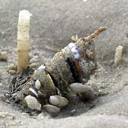
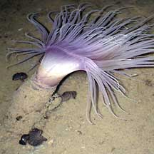
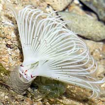
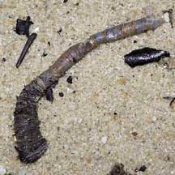

|
|
| Animals
that live in soft tubes How to tell them apart? updated Apr 2020 Soft tubes Many different kinds of animals build soft tubes to live in. Some may build the tubes in soft mud, others in sand, and yet others in living hard corals. Here's more on how to tell apart the animals that create these tubes. |
 |
 |
 |
| Fanworms have a fan of feathery tentacles that sticks out of the tube while the segmented body remains hidden. | Besides fanworms, many other kinds of segmented worms also live in tubes. Some may have a few tentacles on their heads. | Cerianthids also build soft tubes. They have a ring of long fleshy tentacles. |
| Fanworms may be found on coral rubble and even among living hard corals. | Tubeworms are often found in sand bars and sandy shores. | Cerianthids are often found in soft silty sand as well as sandy areas near seagrasses. |
| Fanworms belong to Phylum Annelida, Class Polychaeta and most of those we see on the shores belong to Family Sabellidae. | Tubeworms may belong to many different groups. Most of those we see on the shores are bristleworms that belong to Phylum Annelida, Class Polychaeta. | Cerianthids are related to anemones and hard corals. They belong to Phylum Cnidaria, Order Ceriantharia. |
| More comparisons |
 The spiral of feathery tentacles is made up of two parts. |
 Tube of a tubeworm washed ashore. |

| how to tell apart animals that create hard tubes |